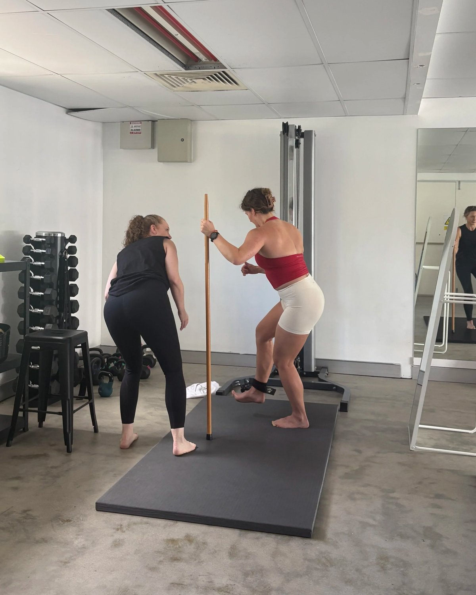
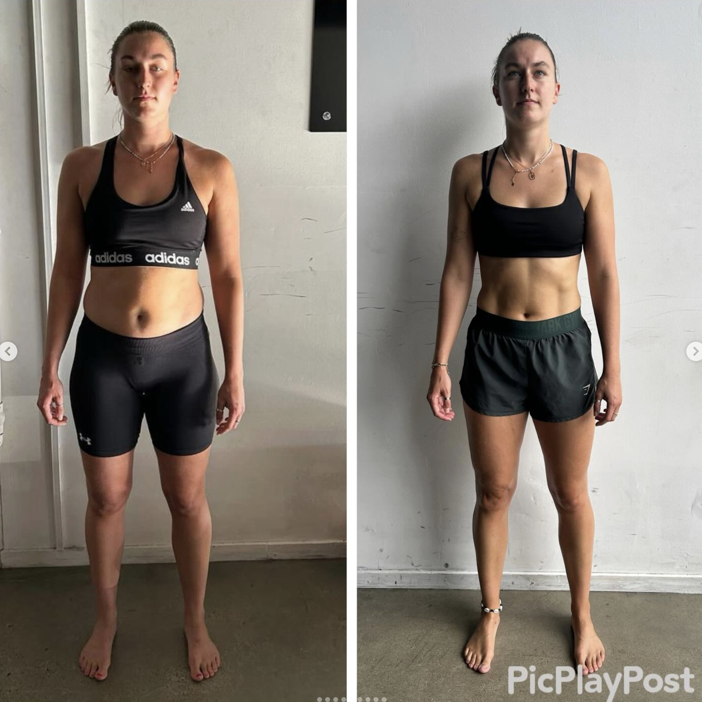

If you’re dealing with tight glutes and lower back pain at the same time, you’re not imagining the connection.
Most people feel it as:
-
A constant ache through the lower back
-
Tightness deep in one glute
-
Pain that shifts between the two
-
Discomfort when sitting, standing, or walking
You stretch your glutes.
You roll your lower back.
It helps briefly.
Then it comes back.
The reason is simple:
Lower back and glute pain are rarely separate problems. They’re usually part of the same mechanical pattern.

Why Tight Glutes and Lower Back Pain Happen Together
The lumbar spine and pelvis operate as a single unit. When one part compensates, the other absorbs load.
In many cases we see in Brisbane, the pattern looks like this:
The pelvis shifts slightly forward relative to the ribcage. Hip internal rotation becomes limited. The body loses rotational efficiency during walking. The lumbar spine extends more than it should to compensate.
When that happens, two things occur simultaneously:
The lower back becomes compressed.
The glutes become overactive in an attempt to stabilise.
People interpret that as “tight glutes.”
But tightness is often protective tension, not weakness.
Your nervous system increases tone to create stability in a system that lacks coordinated force transfer.
That’s why stretching alone doesn’t fix it.

The Mechanical Link Between the Glutes and the Lower Back
During normal gait, force should transfer diagonally through the body. The ribcage rotates over the pelvis. The hips internally and externally rotate under load. The trunk absorbs and redistributes force.
When that rotational sequence breaks down, the lumbar spine often becomes the primary stabiliser.
Instead of rotating efficiently, the body compresses vertically.
The upper glute region absorbs that stress.
That’s why people feel:
-
One-sided glute pain
-
Lower back stiffness in the morning
-
Recurring tightness after sitting
-
Pain that worsens after workouts
It isn’t just a glute problem.
It isn’t just a lower back problem.
It’s a sequencing problem.
Why Strengthening Your Glutes Doesn’t Always Work
Many programs focus on bridges, clams, and band walks.
Those can build local strength.
But if hip internal rotation remains limited and pelvic control under load is poor, strengthening isolated muscles won’t change the loading pattern.
Force will still accumulate at the lumbar spine.
The glutes will still tighten protectively.
Mechanical inefficiency overrides muscle size.

What Actually Fixes Lower Back and Glute Pain
Real improvement happens when the body regains:
-
Rotational capacity
-
Hip internal rotation under load
-
Proper ribcage–pelvis alignment
-
Contralateral arm–leg coordination
-
Trunk stiffness regulation
When those qualities return, load redistributes.
The lumbar spine no longer carries excessive extension force.
The glutes no longer need to brace constantly.
Pain reduces as a byproduct of improved mechanics.
This is structural correction — not symptom management.
Tight Glutes and Lower Back Pain From Sitting
If you sit for work in Brisbane, especially long hours, this pattern becomes more common.
Prolonged sitting reduces hip extension and internal rotation. The pelvis often drifts into posterior tilt when relaxed, then shifts anteriorly when standing. The lumbar spine oscillates between flexion and extension bias.
That repeated imbalance increases compressive stress.
The body adapts.
Tightness develops.
Without restoring gait mechanics and rotational control, the cycle repeats daily.
When Should You Get Assessed?
If you’ve had lower back and glute pain for more than a few weeks and it keeps returning despite stretching or strengthening, it’s worth investigating the mechanical pattern underneath.
Especially if:
-
One side is consistently worse
-
You’ve had prior disc irritation
-
You feel compressed standing
-
Pain improves lying down but returns walking
That suggests load distribution inefficiency, not just muscle tightness.
Lower Back and Glute Pain Treatment in Brisbane
At Functional Patterns Brisbane in Bulimba, we assess how force moves through your body before we prescribe anything.
That includes:
-
Gait analysis
-
Pelvic rotation timing
-
Hip internal rotation capacity
-
Ribcage positioning
-
Breathing mechanics
From there, we rebuild coordinated loading patterns so the lumbar spine stops overworking and the glutes stop bracing unnecessarily.
We don’t isolate symptoms.
We correct the structure creating them.
If you’re in Brisbane and dealing with persistent tight glutes and lower back pain, you can book an Initial Assessment at our Bulimba studio.
Or reach out and we’ll tell you directly whether we’re the right fit.